Dans cette vidéo, je vais vous montrer une stratégie de trading éprouvée que les débutants utilisent pour gagner environ 100 dollars par jour sur KCEX. Cette stratégie est simple, puissante et adaptée aux débutants, et le meilleur, c'est qu'elle fonctionne sur n'importe quelle unité de temps, que vous fassiez du scalping ou du day trading. Je vais vous l'expliquer étape par étape et vous montrer les indicateurs exacts et les paramètres que j'utilise personnellement.
Interface & Outils : TradingView
Contenu textuel & Code : Graphique des bougies japonaises pour BTC/USDT (MEXC), volume, indicateur ERS (50, 3, 0.5, 0.95), et un indicateur RSI-VWAP en bas avec des zones colorées en rouge et vert. On aperçoit des marqueurs de position "Long" et des ordres de clôture.
Action / Démonstration : Le curseur survole un point du graphique pour inspecter les prix et les signaux de trading sur l'unité de temps de 5 minutes.
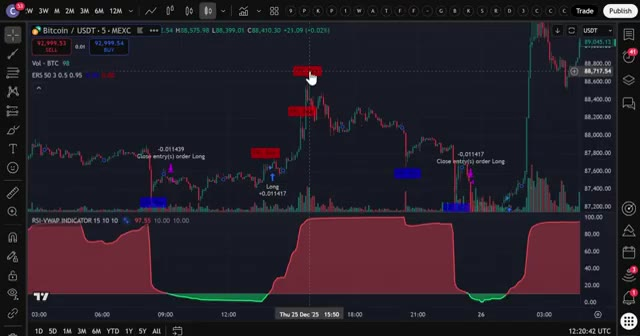
🔍 AgrandirDonc assurez-vous de regarder jusqu'à la fin. Très bien les gars, étape numéro un, inscrivez-vous sur un échange. Pour cette stratégie, nous allons utiliser KCEX. Maintenant, voici la partie importante. KCEX ne requiert absolument aucune vérification KYC, ce qui signifie que vous pouvez commencer à trader immédiatement sans envoyer aucun document personnel.
Interface & Outils : Site web de l'échange KCEX
Contenu textuel & Code : Formulaire d'inscription (Mobile Number / Password / Invite Code), mentions des frais de trading à 0% ou très faibles (Spot Taker/Maker 0.00%, Futures Taker 0.01%) et bannières promotionnelles de récompenses.
Action / Démonstration : Présentation de l'interface d'inscription de l'échange KCEX sans vérification KYC requise.
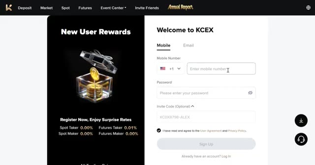
🔍 AgrandirSi KCEX n'est pas disponible dans votre pays, vous pouvez utiliser Bybit comme alternative. Ils offrent jusqu'à 30 000 USDT de bonus de trading en ce moment. Je mettrai les deux liens en bas. Mais pour cette vidéo, nous utiliserons KCEX. Pour vous inscrire sur KCEX et réclamer vos bonus, cliquez sur le lien tout en haut de la description.
Interface & Outils : Pages web des courtiers crypto Bybit et KCEX
Contenu textuel & Code : Offres de bonus de trading, codes de parrainage, formulaires d'inscription et frais de taker/maker (0,00 % / 0,01 %).
Action / Démonstration : Présentation des plateformes alternatives de trading et de leurs avantages de parrainage.
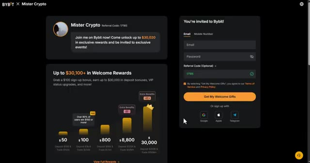
🔍 Agrandir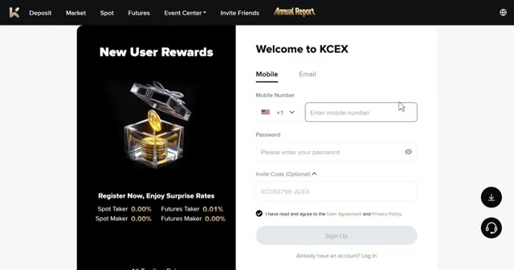
🔍 AgrandirVous serez redirigé vers la page d'inscription où vous avez simplement à entrer votre e-mail, créer un mot de passe, et vous êtes prêts à commencer. Aucune vérification n'est nécessaire. Maintenant, KCX propose de très belles récompenses pour les nouveaux utilisateurs. Vous bénéficiez de frais de transaction réduits, de récompenses pour la vérification du compte, et vous pouvez gagner jusqu'à 5 USDT rien qu'en liant votre compte X et en partageant votre lien de parrainage.
Interface & Outils : Interface web de la plateforme d'échange KCX (page d'inscription et centre de récompenses).
Contenu textuel & Code : Formulaire d'inscription, frais de transaction (0% en spot, 0.01% en futures) et bonus en USDT pour les tâches de dépôt et de trading.
Action / Démonstration : Navigation sur la page d'inscription et présentation des avantages et récompenses pour les nouveaux utilisateurs de KCX.
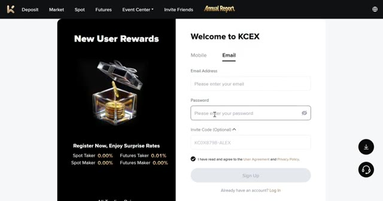
🔍 Agrandir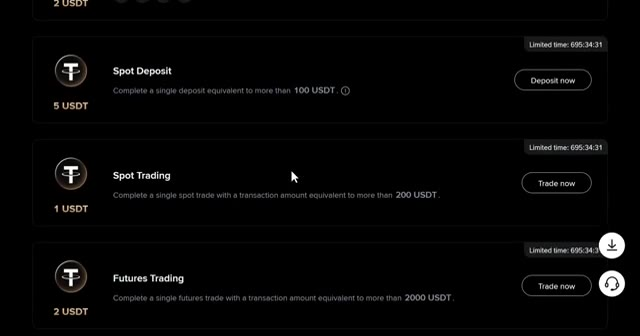
🔍 Agrandirmais la meilleure partie c'est que vous pouvez commencer à trader immédiatement avec zéro friction. Laissez-moi vous montrer comment vous configurer. L'étape numéro deux consiste à déposer des fonds. Une fois que vous êtes connecté à KCEX, cliquez sur portefeuilles dans le coin supérieur droit puis cliquez sur déposer. Choisissez la pièce que vous voulez déposer. Je recommande l'USDT et sélectionnez le bon réseau blockchain. Assurez-vous de choisir le bon réseau pour éviter de perdre vos fonds.
Interface & Outils : Site web de l'échange de cryptomonnaies KCEX
Contenu textuel & Code : Menus de navigation (Deposit, Market, Spot, Futures, Wallets) et options de sélection d'actifs pour le dépôt (USDT, USDC, BTC, ETH).
Action / Démonstration : Navigation sur la plateforme KCEX et sélection d'une cryptomonnaie pour effectuer un dépôt de fonds.
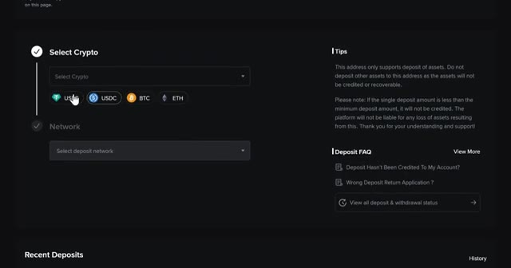
🔍 AgrandirPersonnellement, j'aime utiliser le TRC20 parce qu'il est rapide et les frais sont très bas. Confirmez les détails, puis scannez le QR code ou copiez l'adresse de dépôt pour transférer vos fonds depuis votre portefeuille ou un autre échange. Une fois vos fonds déposés, il est temps d'ouvrir une position. L'étape numéro trois consiste à ouvrir votre première position. Cliquez sur "Futures" dans le menu supérieur. Cela vous amènera à l'interface de trading.
Interface & Outils : Interface web de l'échange de cryptomonnaies KCEX (pages de dépôt et d'accueil).
Contenu textuel & Code : Adresse de dépôt TRC20, QR code, informations sur le dépôt minimum (0.02 USDT) et bannières promotionnelles de la plateforme. [DESCR_IMAGE_2] Navigation sur l'interface de l'échange pour présenter les options de dépôt et les caractéristiques de la plateforme.
Action / Démonstration : Sélection du réseau TRC20 pour effectuer un dépôt de fonds en USDT avant d'ouvrir une position.
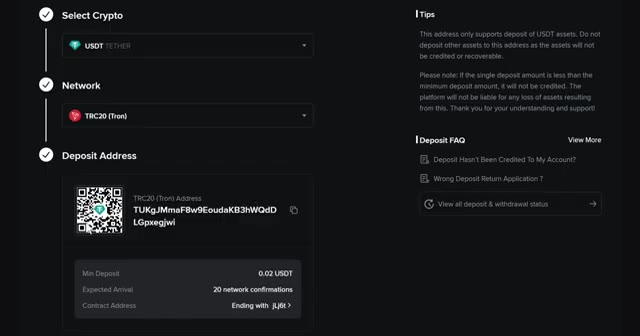
🔍 Agrandir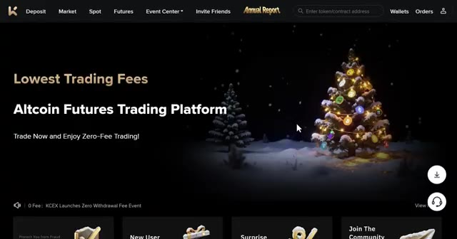
🔍 AgrandirChoisissez l'actif que vous souhaitez trader dans le coin supérieur gauche. Pour cet exemple, j'utiliserai BTC slash USDT. Sélectionnez votre type d'ordre, limite ou au marché. Pour les débutants, je recommande de commencer par des ordres au marché pour une exécution instantanée. Entrez les détails de votre trade, tels que la quantité et le prix. Ensuite, choisissez votre type de effet de levier. Vous pouvez utiliser la marge croisée ou la marge isolée. Personnellement, j'utilise la marge isolée car elle limite votre risque à cette position spécifique uniquement. Donc, si le trade tourne mal, vous perdez seulement ce que vous avez mis dans le trade, et non le solde de tout votre compte. Vous pouvez utiliser jusqu'à
Interface & Outils : Interface d'échange de cryptomonnaies (KCEX)
Contenu textuel & Code : Graphique en chandeliers 15m de BTC/USDT, indicateurs EMA, carnet d'ordres en temps réel, options de type d'ordre (Limit, Market) et modes de marge (Isolated, Cross).
Action / Démonstration : Sélection du type d'ordre (limite ou au marché) et configuration du mode de marge sur la plateforme d'échange.
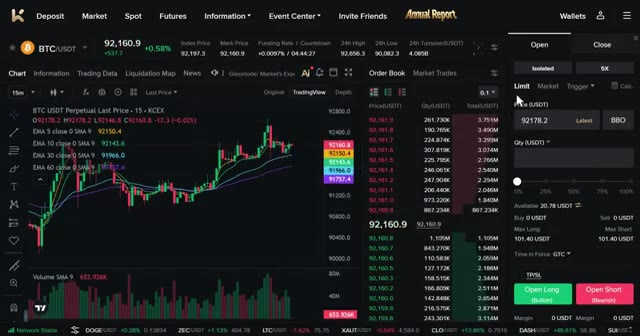
🔍 Agrandir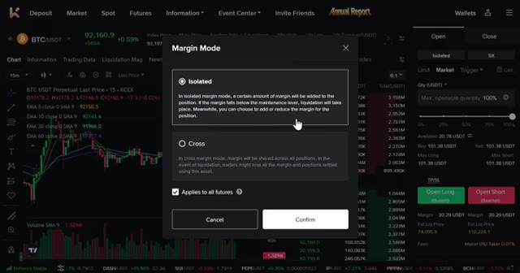
🔍 AgrandirUn effet de levier de 125 fois sur KCX, mais pour les débutants, je recommande vivement de commencer par un effet de levier de cinq à dix fois jusqu'à ce que vous soyez à l'aise avec le fonctionnement du levier. Confirmez les détails de votre ordre, puis cliquez sur ouvrir long ou ouvrir short pour ouvrir votre position. Une fois votre ordre exécuté, vous pouvez le voir sous l'onglet des positions au bas de l'écran. Maintenant que vous savez comment utiliser les produits dérivés sur KCEX, passons à la stratégie réelle qui peut vous rapporter 100 dollars par jour. Étape numéro quatre, la configuration de vos indicateurs sur Trade and View. Allez sur Trade and View. Si vous n'avez pas Trade and View
Interface & Outils : Échange de cryptomonnaies KCX (interface Futures).
Contenu textuel & Code : Graphique BTC/USDT en unité 15m, moyennes mobiles EMA (5, 10, 30, 60), volume, carnet d'ordres, options de levier (5X isolé), notifications d'exécution d'ordre (Order submission successful, BTC order filled completely).
Action / Démonstration : Configuration d'un effet de levier de 5X et passage d'un ordre d'achat (Open Long) sur le marché des futures BTC/USDT.
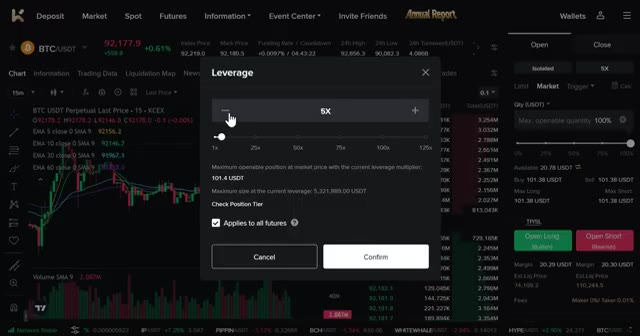
🔍 Agrandir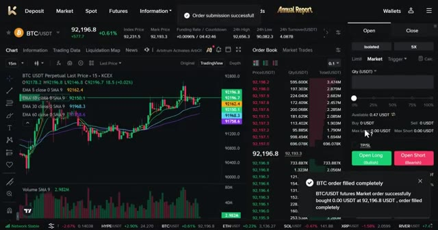
🔍 Agrandir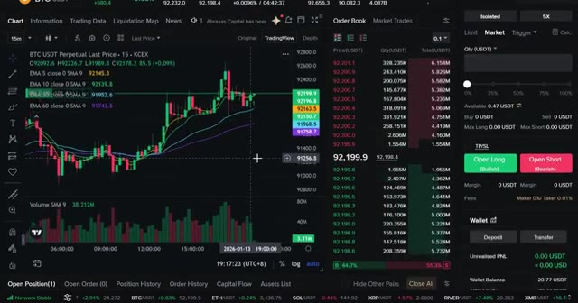
🔍 Agrandirpourtant, utilisez le lien ci-dessous pour obtenir une réduction. Je recommande d'utiliser la version pro pour les meilleurs indicateurs. Sélectionnez la paire de trading que vous souhaitez trader. Pour cet exemple, j'utiliserai BTCUSDT. Maintenant, choisissez votre unité de temps préférée. Cette stratégie fonctionne sur toutes les unités de temps, y compris les graphiques de 1 minute, 5 minutes, 15 minutes et 1 heure. Pour les débutants visant 100 dollars par jour, je recommande le graphique de 5 minutes ou de 15 minutes. Maintenant, cliquez sur l'onglet des indicateurs en haut et recherchez RSI VWAP. Sélectionnez-le. Ouvrez les paramètres de l'indicateur en cliquant sur l'icône en forme de rouage. Allez dans les entrées
Interface & Outils : Graphique TradingView.
Contenu textuel & Code : Paire BTCUSDT, liste des échanges (Binance, Bybit, OKX, MEXC, etc.), et sélecteur d'unités de temps (de 1s à 1M).
Action / Démonstration : Sélection de la paire de trading BTCUSDT puis choix de l'unité de temps sur TradingView.
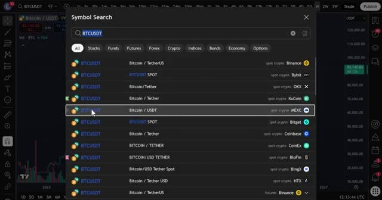
🔍 Agrandir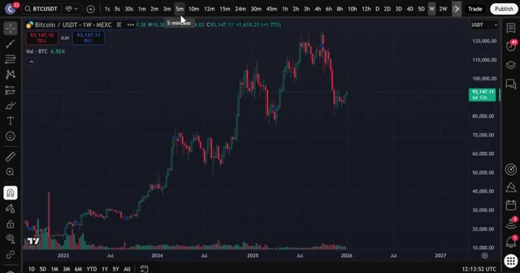
🔍 Agrandiret définissez la longueur du RSI VWAP à 15. Survente à 10. Surachat à 10. Ensuite, ajoutez un deuxième indicateur. Retournez dans les indicateurs. Recherchez « extreme reversal setup » et sélectionnez-le. Ouvrez les paramètres. Allez dans les entrées et changez le multiplicateur à 3. Ces paramètres améliorent considérablement la précision des signaux et filtrent les faux signaux. J'ai testé cela sur plusieurs unités de temps et cela fonctionne très, très bien. L'étape numéro cinq concerne les entrées. Pour une configuration d'achat, cette stratégie nécessite la confirmation des deux indicateurs. Tout d'abord, attendez que la ligne RSI passe sous le niveau de survente et forme un vert
Interface & Outils : TradingView
Contenu textuel & Code : Menu « Indicators, metrics, and strategies » avec une barre de recherche et une liste d'indicateurs favoris et intégrés (3 Line Strike, Bollinger Bands, etc.).
Action / Démonstration : Navigation dans le menu des indicateurs pour en ajouter un nouveau sur le graphique.
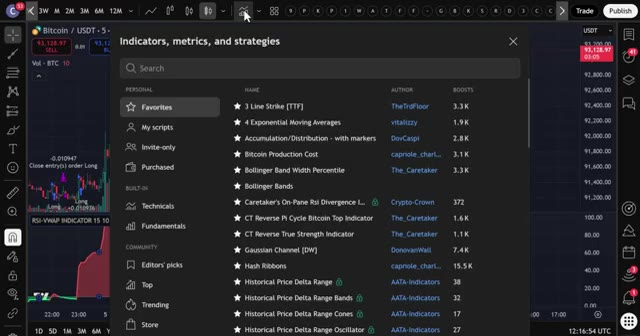
🔍 Agrandirnuage. Attendez ensuite qu'un signal bleu de l'indicateur de configuration de retournement extrême apparaisse sous la bougie. Lorsque le signal apparaît, confirmez que le RSI est toujours en dessous du niveau de survente, et que le vert nuage est toujours actif. Entrez en position sur une nouvelle bougie après l'apparition du signal. Placez votre stop loss près du creux récent, généralement 1 à 2 % en dessous de votre entrée. Fixez votre take profit à 2 ou 3 fois votre risque. Donc, si vous risquez 10 $, visez un bénéfice de 20 à 30 $. Cela vous donne un ratio risque/rendement de 2 pour 1 ou de 3 pour 1, ce qui est la clé d'une rentabilité constante. Pour une configuration de vente, le processus est
Interface & Outils : TradingView
Contenu textuel & Code : Graphique de prix Bitcoin (MEXC), indicateur "ERS 50 3 0.5 0.95" avec des signaux d'achat (flèches bleues "Long") et de vente (flèches violettes "Close entry(s) order Long"), indicateur "RSI-VWAP INDICATOR" en bas affichant une zone verte de nuage de survente.
Action / Démonstration : Analyse graphique illustrant l'apparition d'un signal d'achat bleu de l'indicateur de retournement extrême couplé à la zone verte du nuage RSI.
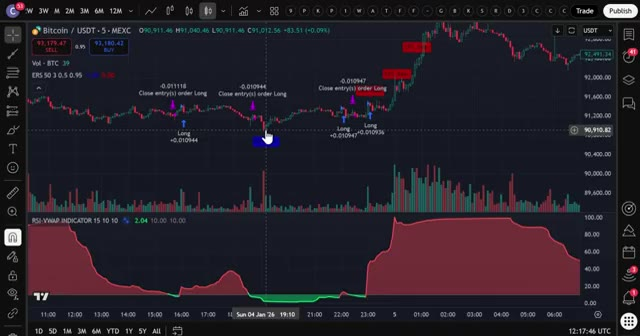
🔍 Agrandirexactement l'opposé. Attendez que la ligne du RSI dépasse le niveau de surachat et forme un nuage rouge. Attendez ensuite qu'un signal rouge de l'indicateur de configuration de retournement extrême apparaisse au-dessus de la bougie. Lorsque le signal apparaît, confirmez que le RSI est toujours au-dessus du niveau de surachat. Le nuage rouge est toujours actif. Entrez dans le trade sur une nouvelle bougie après l'apparition du signal. Placez votre stop loss près du récent sommet. Fixez votre take profit à deux ou trois fois votre risque. Avant de conclure, assurez-vous de créer votre compte KCX en utilisant le lien ci-dessous. Rappelez-vous, aucune vérification KYC n'est requise,
Interface & Outils : TradingView (Graphique de trading en ligne)
Contenu textuel & Code : Paire Bitcoin/USDT (MEXC), indicateurs techniques (RSI-VWAP, indicateur de configuration de retournement extrême avec signaux d'achat/vente et ordres Long/Close), chandeliers en unités de 5 minutes.
Action / Démonstration : Analyse graphique de la configuration de trading illustrant les signaux d'entrée en position longue et de sortie basés sur le RSI et les indicateurs de retournement.
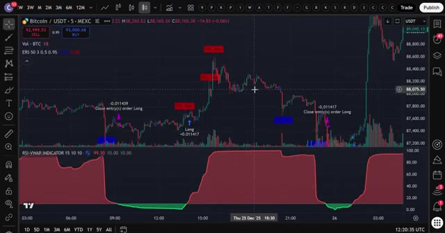
🔍 Agrandirainsi vous pouvez commencer à trader immédiatement. Effectuez votre premier dépôt pour commencer à utiliser cette stratégie. Réclamez vos bonus, y compris des frais réduits et des récompenses pour avoir complété des trades. Si KCX n'est pas disponible dans votre pays, rappelez-vous que vous pouvez utiliser Bybit. Ils offrent jusqu'à 30 000 USDT de bonus de trading en ce moment. Les deux liens sont dans la description. C'est tout, les gars. Cette stratégie est simple, efficace et parfaite pour les traders débutants. Commencez avec de petites positions, pratiquez vos entrées et augmentez la taille au fur et à mesure que vous gagnez en confiance. Et si vous voulez plus de détails sur le fonctionnement des plateformes KCEX et Bybit, regardez la vidéo qui apparaît à l'écran en ce moment. Bref,
Interface & Outils : Échange de cryptomonnaies KCX et plateforme d'analyse graphique TradingView.
Contenu textuel & Code : Frais de trading réduits, codes d'invitation, signaux de trading (ordres Long), et indicateurs techniques sur graphique 5m.
Action / Démonstration : Présentation des avantages d'inscription, des bonus de dépôt et analyse technique d'une stratégie de trading sur crypto.
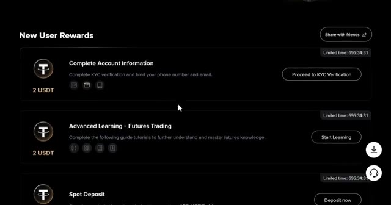
🔍 Agrandir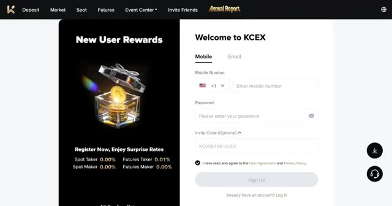
🔍 Agrandir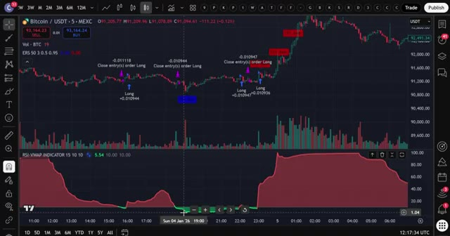
🔍 AgrandirCeci étant dit, je vous vois dans la prochaine.
Interface & Outils : Aucun
Contenu textuel & Code : Aucun
Action / Démonstration : Aucun